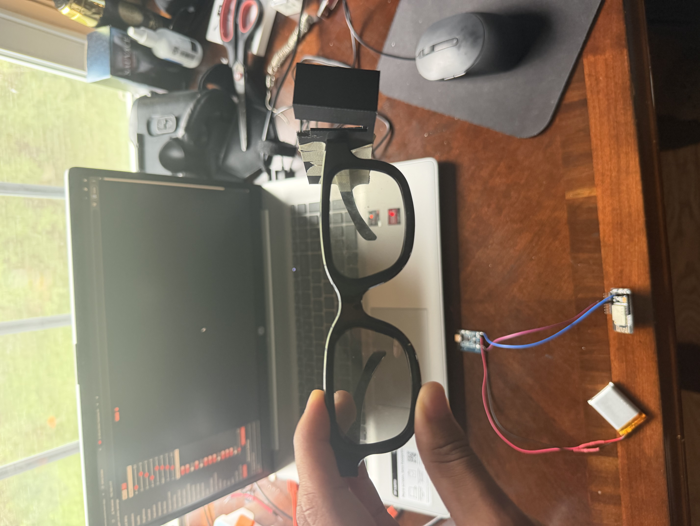
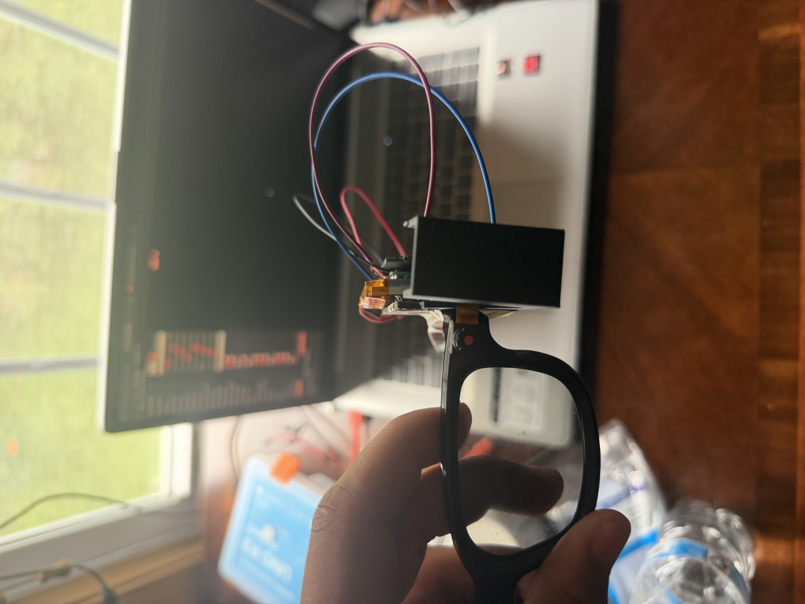
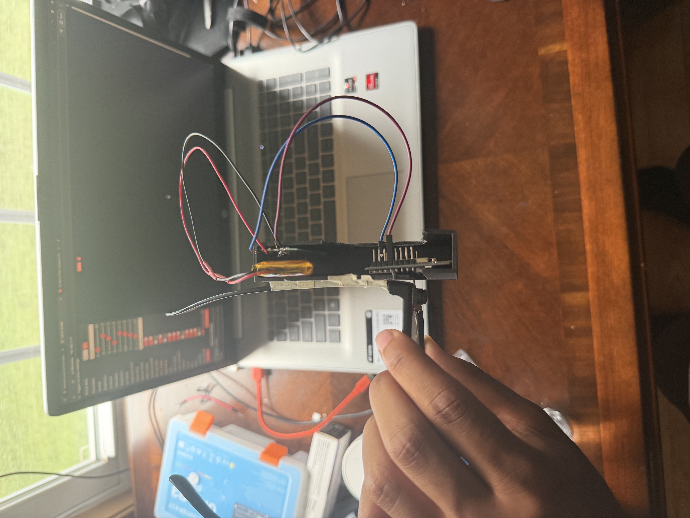
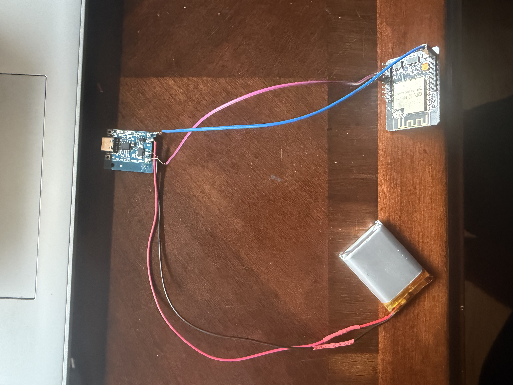

Project Overview
In ProgressThis one started as a friend's idea: people with dementia often can't remember where they last set down a phone, cup, or remote — what if a camera could just remember for them? I built the software foundation for that system as a proof-of-concept before touching any wearable hardware. The long-term vision is camera glasses that quietly watch what you set down and can answer "where's my phone?" on request, but I deliberately proved the detection-and-memory logic first on a stationary setup, since that's the part that actually had to work before a wearable form factor mattered at all.
How It Works
The system runs as four parts in sequence: an ESP32-CAM streams live video over WiFi, a laptop running YOLOv8-nano detects objects of interest in each frame, custom Python logic tracks each object and saves a snapshot the moment it disappears from view, and a terminal query tool answers "where's my ___?" with that saved photo, a timestamp, and a spoken response — fully offline, no cloud or internet dependency anywhere in the pipeline.
Project Demonstration
The Glasses Prototype
The current hardware is a rough, hook-on mechanism that clips onto an existing pair of glasses — not a finished wearable design. The goal at this stage was purely to prove that the mounting concept was physically reasonable before investing in a proper enclosure. The camera, battery, and charging circuit are all still running on the desk-mounted setup shown in the demo video above; the clip-on piece exists to validate the idea, not to be the final form factor.

1. Rough hook-on mount prototype

2. ESP32-CAM and mount attached to glasses frame

3. Close-up of the camera mounting mechanism

4. Full prototype assembly
System Architecture
- Camera capture: An ESP32-CAM streams live video over WiFi as MJPEG, running fully untethered from a 3.7V 1000mAh LiPo battery through a TP4056 charging module.
- Object detection: A laptop running YOLOv8-nano identifies tracked objects (currently phone and cup — both native COCO dataset classes) in each incoming frame.
- State tracking & memory: Custom Python logic (
tracker.py) watches each detected object and saves a snapshot plus timestamp representing its last known position, overwriting the previous snapshot as new sightings come in. - Query interface: A terminal tool (
query.py) accepts typed input like "phone" and responds with the saved photo, a human-readable timestamp, and a spoken answer via offline text-to-speech.
The Memory Logic — Why It Works Without Motion Tracking
The core design decision was avoiding the hard problem entirely. Detecting the exact moment an object is "placed down" requires judging whether it's stationary, which is genuinely difficult for a moving or head-worn camera since the background never holds still. Instead, the system continuously re-photographs each tracked object while it's visible and simply treats the last photo taken right before the object disappears from view as its last known location. This mirrors how people actually behave — your gaze tends to move away from something shortly after you set it down — so "the last frame it was seen in" naturally lands near the moment of placement without any motion analysis at all.
- If the object is detected in the current frame, its "last seen" time updates; a new snapshot is only saved (overwriting the old one) once 5+ seconds have passed since the last save.
- If the object isn't detected, nothing happens immediately — that avoids false triggers from something like a hand briefly covering it. Only after a full second of continuous non-detection is the object considered "gone," and the last saved snapshot becomes the standing answer.
- When the object reappears, the cycle just restarts and old data gets naturally overwritten with fresh sightings.
Scope Decisions
A few things were left out on purpose, not overlooked. There's no room or location labeling — the snapshot photo itself is the location, which is simpler to build and honestly more useful to an end user than an abstract room name would be. There's no GPS, since it doesn't work reliably indoors, which is the environment this actually needs to function in. And queries are typed rather than spoken for now; voice output through TTS is already working, but voice input is next on the list rather than part of this proof-of-concept.
Real Engineering Challenges
- ESP32-CAM flashing issues: Got a "camera detected but not compatible" error that turned out to be the wrong camera model selected in
board_config.h— fixed by correctly selecting AI-Thinker within Espressif's ESP32 board package, along with getting the GPIO0-to-GND jumper procedure right (grounded during upload, removed for normal operation). - Driver headaches on a fresh machine: The CP2102 USB-to-TTL adapter needed the Silicon Labs CP210x VCP driver installed manually through Device Manager, since the newer driver package didn't ship with a one-click installer anymore.
- Streaming lag while on battery power: I ruled out WiFi signal strength and resolution/quality settings one at a time before landing on the real cause — Python was falling progressively behind the incoming stream. The fix was architectural: read the MJPEG stream continuously in a background thread and always serve only the newest frame to the detection loop, instead of processing every frame in order.
- Battery connector mismatch: The LiPo battery's Micro JST 1.25mm connector didn't match the TP4056 module's bare solder pads, so I cut off the JST plug and soldered the battery leads directly to the board.
Current Status & What's Next
- ESP32-CAM flashed and streaming reliably over WiFi, fully untethered on battery power
- YOLOv8-nano detection running live on the camera's stream
- State tracker correctly saving and overwriting snapshots based on object presence/absence
- Query interface successfully retrieving the right snapshot, timestamp, and spoken answer
- Full end-to-end test passed: phone placed in view → detected → snapshot saved → phone moved out of view → query returns the correct last-known snapshot and timestamp
The core software logic is proven — that was the whole point of this phase. The next step is hardware: designing a real 3D-printed housing to mount the ESP32-CAM, battery, and charging circuit near eye level for the actual wearable glasses form factor, rather than the rough hook-on clip this prototype currently uses.